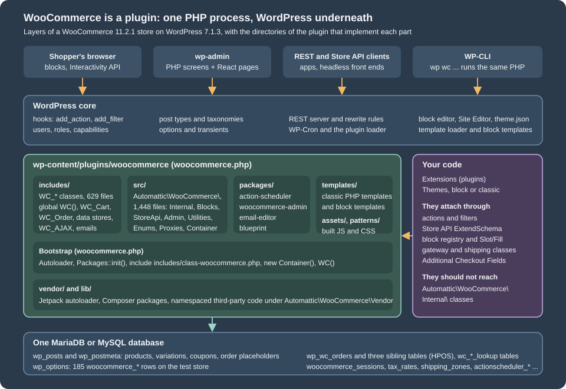
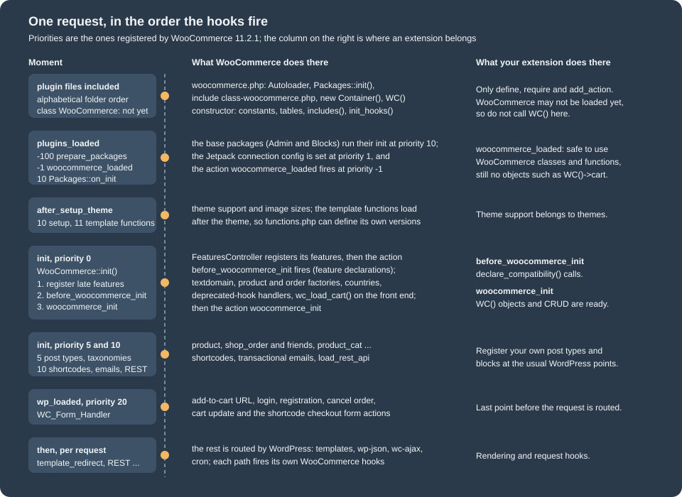
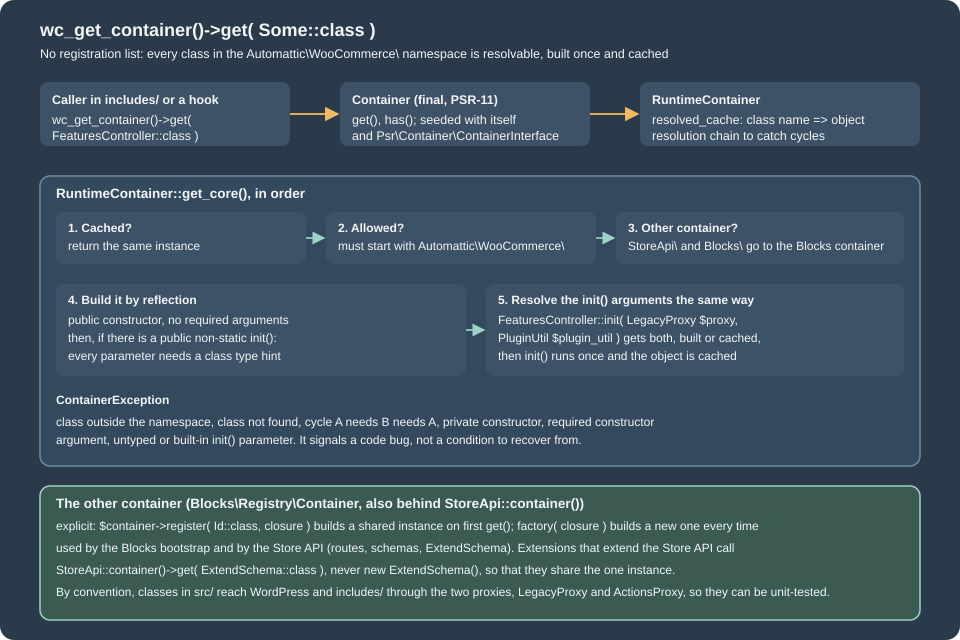

Architecture
|
This content was generated with the assistance of AI and should be verified against the official documentation before being relied on in production. |
WooCommerce is not an application that runs next to WordPress: it is one WordPress plugin, a few thousand PHP files that WordPress
includes on every request, plus a React front end that ships already built. Everything WooCommerce does, from registering the
product post type to taking a payment, happens through the same hooks, loaders, REST server and database layer that any
other plugin uses. That is why this page spends its first half on WordPress: a developer who knows which WordPress mechanism
WooCommerce relies on at each step can predict where a customisation belongs and why it sometimes does not run.
The page was written against WooCommerce 11.2.1 (the stable release of 2026-10-09; 11.3.0-beta.1 followed on 2026-10-26) on WordPress 7.1.3, PHP 8.3.36 and MariaDB 11.8.9, and checked on 2026-10-27. WooCommerce 11.1.0 raised the WordPress minimum to 7.0, the plugin header of 11.2.1 still says PHP 7.4, and PHP 8.1 becomes the minimum from 11.6 (February 2027); the versions page explains why the plugin header and the merchant-facing server requirements disagree. Architecture does not depend on the plan or the hosting: the code described here is the same on a shared host and on a Docker container, and it is the free plugin from WordPress.org that is analysed. WooPayments and the paid extensions of the Woo Marketplace are separate plugins built on exactly the same foundations and are not part of the 11.2.1 download.
The page follows the code in the order a request meets it. It starts with how WooCommerce sits on WordPress, then the
directories of the plugin and the three autoloaders, then the bootstrap with the real hook priorities, the container that builds
the modern classes, the packages that are bundled, the feature flags of FeaturesController and finally where an extension
should attach. The running example is Pocket Coffee, the small specialty-coffee shop used across this section: the plugin
pocket-coffee-architecture records the boot order and declares its feature compatibility, and the next page,
Hooks: Actions and Filters, builds the roast date badge and the
order-placed log on the same foundations. The WordPress concepts used here (plugins, hooks, blocks, WP-CLI) are explained as they
appear; the WooCommerce landing page lists the rest.
The shape of a WooCommerce store
The figure shows the layers of a store. Four kinds of client reach WordPress: the shopper’s browser, which receives HTML and block-rendered pages; wp-admin, a mix of PHP screens and React pages; REST and Store API clients; and WP-CLI, which boots the very same WordPress and WooCommerce code and runs a command instead of rendering a page. WordPress core owns the lifecycle (plugin loading, hooks, the REST server, the template loader, cron and the block editor); WooCommerce is a plugin directory that registers itself through those hooks; the extensions and themes of the merchant attach to WooCommerce through the same hooks and a handful of WooCommerce-specific extension points.

Two consequences are worth stating before any code. First, there is no WooCommerce process, service or daemon: a request is a PHP process that loads WordPress, which loads the active plugins, and every WooCommerce feature is a callback attached to a hook of that process. Second, the database is the WordPress database; WooCommerce adds tables and rows to it but has no storage of its own, and everything it needs to persist between requests (the cart, the session, the order) has to be written there or to a cache that WordPress knows about.
How WooCommerce sits on WordPress
What WooCommerce adds to WordPress
On an installation with WooCommerce active, the extra WordPress objects can be listed with WP-CLI. The lab runs WP-CLI in a throw-away Docker container attached to the WordPress container; the commands below drop that wrapper, and the output is what the 11.2.1 store printed.
wp post-type list --fields=name,public --format=table | grep -E "product|shop_|name"
wp taxonomy list --fields=name,object_type --format=table | grep -E "product|name"
wp role list --fields=role,name --format=tablename public
product 1
product_variation
shop_order
shop_order_refund
shop_coupon
shop_order_placehold
name object_type
product_brand product
product_type product
product_visibility product, product_variation
product_cat product
product_tag product
product_shipping_class product, product_variation
pos_product_visibility product, product_variation
pa_origin product
pa_roast product
role name
administrator Administrator
editor Editor
author Author
contributor Contributor
subscriber Subscriber
customer Customer
shop_manager Shop managerThe post-type and taxonomy listings are filtered by grep to the WooCommerce entries (the rest belong to WordPress itself), and the
two pa_* taxonomies at the end are global attributes that other examples of this section created on the lab store. The output shows
the WordPress side of the WooCommerce data model:
| WordPress object | What WooCommerce uses it for |
|---|---|
Post types |
Products and the variations of a variable product. Registered at priority 5 of |
Post types |
The legacy storage of orders and refunds. With HPOS (High-Performance Order Storage) enabled, as on the lab store, orders live in |
Post type |
Coupons. |
Taxonomies |
Categories, tags, the product type (simple, variable …), visibility flags such as featured, the shipping class and brands. |
Attribute taxonomies |
One taxonomy per global product attribute, created from a row of the table |
Roles |
The customer role has only the |
Pages |
Shop, Cart, Checkout and My account are created at install time; their IDs are stored in options and read with |
Rewrite endpoints |
Thirteen endpoints are added to the My account and Checkout pages, among them |
Shortcodes |
|
REST namespaces |
|
Options |
185 |
WP-Cron and Action Scheduler |
A few WordPress cron events (for example |
Custom tables |
Sessions, tax rates, shipping zones and methods, API keys, payment tokens, order items, downloadable permissions, lookup tables for analytics and product search, the HPOS tables, rate limits, stock reservations and Action Scheduler’s own four tables: 41 in total on the lab store on the day of the run ( |
Source: WooCommerce docs: Data storage
The REST namespaces and the table list can be checked in a minute against any store:
curl -s http://localhost:8081/wp-json/ | python3 -c 'import sys,json; print(json.load(sys.stdin)["namespaces"])'
wp db tables --all-tables-with-prefix | grep -E "wc_|woocommerce|actionscheduler" | wc -l['oembed/1.0', 'ec-hello/v1', 'wc/v3', 'wc/v1', 'wc/pos/v1/catalog', 'jetpack/v4', 'wc-admin', 'wc-analytics', 'wc/store', 'wc/store/v1', 'wc/private', 'wc/v2', 'wc-admin-email', 'wc-push-notifications', 'wc-telemetry', 'wccom-site/v3', 'wp-abilities/v1', 'mcp', 'wp/v2', 'wp-site-health/v1', 'wp-block-editor/v1']
41ec-hello/v1 is the route of a smoke-test plugin on the lab store; wp-abilities/v1 and mcp come from the WordPress Abilities API
and the MCP Adapter plugin, which the AI page covers.
What WordPress keeps doing
WooCommerce replaces very little of WordPress; it reuses it. The WordPress plugin loader includes the main file. The WordPress
hook system, described on the next page, is the only extension
mechanism, so a WooCommerce callback and a callback of the merchant’s own plugin sit in the same priority list. The template
loader decides which file renders a request: for a classic theme WooCommerce filters template_include and loads a template from
the templates/ directory unless the theme overrides it, and for a block theme the Site Editor templates are used and
WooCommerce contributes block templates and patterns. The REST server serves wc/v3 and wc/store/v1 like any other
namespace. Users, roles and capabilities come from WordPress: a WooCommerce customer is a WordPress user with the customer
role, and a guest has no user at all (the cart of a guest is a session row identified by a cookie, see below). Cron is
WordPress cron, with Action Scheduler layered on top for work that must survive and be retried.
The two places where WooCommerce deliberately steps beside WordPress are storage and the shopper’s state. Orders can leave
wp_posts entirely (HPOS), and the cart and the customer of a visitor live in a WooCommerce-owned session table and cookie
(the table wp_woocommerce_sessions and the cookie wp_woocommerce_session_<hash>; for a logged-in user the session is keyed by
the user ID, which the lab confirmed: a WP-CLI process run as user 1 shows a session handler whose customer ID is 1). The cart is
also the object WordPress knows least about: it is loaded only on requests that need it, as the next listing shows.
wp --exec='define( "WP_ADMIN", true );' eval 'echo "is_admin(): ", var_export( is_admin(), true ), "\ncart: ", is_null( WC()->cart ) ? "null" : get_class( WC()->cart ), "\nsession: ", is_null( WC()->session ) ? "null" : get_class( WC()->session ), "\ncustomer: ", is_null( WC()->customer ) ? "null" : get_class( WC()->customer ), "\n";'is_admin(): true
cart: null
session: null
customer: nullThe same command without the --exec argument prints WC_Cart, WC_Session_Handler and WC_Customer, because a WP-CLI process
is not an admin request. The rule is in WooCommerce::init(): wc_load_cart() runs only for a "frontend" request, which the
class defines as not admin (or an AJAX call), not cron and not REST. It matters for any code that runs from an admin screen or a
scheduled action: WC()->cart is null there, and calling wc_load_cart() first is the documented workaround.
The plugin on disk
The 11.2.1 download contains these top-level entries:
woocommerce/
woocommerce.php plugin header and bootstrap
includes/ legacy global classes, 629 PHP files
src/ namespaced classes, 1,448 PHP files
packages/ bundled packages: action-scheduler, blueprint, email-editor, woocommerce-admin
templates/ classic PHP templates, block templates, 230 PHP files
assets/ built JavaScript, CSS, fonts and images (assets/client holds the React builds)
patterns/ block patterns
vendor/ lib/ Composer packages and the Jetpack autoloader; lib/packages holds namespaced third-party code
i18n/ sample-data/ readme.txt uninstall.php license.txtThe JavaScript source of the admin app and of the blocks is not in the plugin; only the built bundles are, and the sources live
in the client directory of the public monorepo on GitHub. A developer who reads the PHP of an installed store sees all
the server code but only minified front-end code.
includes versus src
The two code directories are two eras of the same plugin, and the difference decides how a class is found, built and supported.
includes/ |
src/ |
|
|---|---|---|
Naming |
Global classes with a |
Namespaced classes under |
Loading |
|
The Jetpack autoloader reads the Composer class map generated for |
Construction |
|
|
Public contract |
This is the API that books, themes and thousands of plugins call: CRUD objects, the cart, hooks |
Mixed: |
The src/ directory has these top-level folders: Abilities, Admin, Blocks, Caches, Caching, Checkout, Database,
Enums, Gateways, Internal, LayoutTemplates, Proxies, StoreApi and Utilities, plus Container.php, Packages.php,
Autoloader.php and Deprecated.php. The folder names show how the plugin absorbed its former feature plugins:
src/Blocks holds what used to be the standalone WooCommerce Blocks plugin (148 entries in Blocks/BlockTypes),
src/StoreApi the Store API (40 files in Routes/V1) and src/Admin what was the WooCommerce Admin plugin.
The rule of Internal deserves emphasis because it decides whether an extension survives updates. The namespace
Automattic\WooCommerce\Internal (59 entries in 11.2.1) holds implementation classes that the source marks
@internal: WooCommerce may rename, move or delete them in any release, and the backward-compatibility promise of the plugin
does not cover them. FeaturesController, CustomOrdersTableController and the abstractions of HPOS live there, and so do most
of the classes the container builds at boot. When an official recipe has to use one, it guards it, as the HPOS recipe book does
with class_exists() before it asks the container for the CustomOrdersTableController. The public helpers sit one level up:
Automattic\WooCommerce\Utilities\FeaturesUtil, OrderUtil, PluginUtil, the enums in Enums (OrderStatus, ProductType
and the others), and the extension points of the Store API and the blocks.
The flowchart condenses the decision. Its first question is the one that matters in practice: is the class meant for you?
The three autoloaders
Three class loaders cooperate, and knowing them explains two classes of errors: a "class not found" for a WC_ class that has
been moved, and a fatal error during an in-place update.
-
The Composer class map and PSR-4 rules for
Automattic\WooCommerce\, loaded bysrc/Autoloader.phpthroughvendor/autoload_packages.php, the Jetpack autoloader. The Jetpack autoloader exists so that when two plugins bundle different versions of the same Composer package, the newest copy wins. -
WC_Autoloader, registered byincludes/class-wc-autoloader.php, which turns a class name such asWC_Gateway_Chequeinto the fileincludes/gateways/cheque/class-wc-gateway-cheque.phpand similar mapped locations, and refuses to load the retiredWC_APIclass. -
A WooCommerce-scoped PSR-4 loader appended to the SPL autoload stack as a last resort. When WordPress replaces the files of the plugin in the middle of a request (an in-place update), the Jetpack class map that was snapshotted at the start of the request cannot find a class that is new in the update; the fallback loads it from disk instead of crashing the request.
The page on extension development shows how a plugin of your own should use Composer; for the PHP basics see namespaces and autoloading and Composer and packages.
The bootstrap, hook by hook
woocommerce.php
The main file does five things before any hook has fired, and it is short enough to read in a minute:
-
It defines
WC_PLUGIN_FILEand loadssrc/Autoloader.phpandsrc/Packages.php; if the Composer autoloader is missing it returns early and the plugin does nothing (a broken or partial installation shows an admin notice instead of a fatal error). -
It calls
Packages::init(), which only registers hooks: package preparation onplugins_loadedat priority -100, package initialisation at priority 10, and the guards that stop a merged feature plugin from being activated beside the core. -
It registers the WooCommerce-scoped fallback autoloader described above.
-
It includes
includes/class-woocommerce.phpand builds the container,$GLOBALS['wc_container'] = new Automattic\WooCommerce\Container(). -
It defines the functions
WC()(theWooCommercesingleton) andwc_get_container(), and sets$GLOBALS['woocommerce']for the code that still reads the global.
WC() calls WooCommerce::instance(), which constructs the object once. The constructor defines the constants (WC_ABSPATH,
WC_VERSION, WC_ROUNDING_PRECISION and about a dozen more), registers the extra tables in the $wpdb object so that
$wpdb->order_itemmeta and $wpdb->wc_product_meta_lookup exist, calls includes() and finally init_hooks(). includes()
loads about a hundred files; which ones depends on the request:
| Condition | Extra files loaded |
|---|---|
Always |
Abstract classes, core functions, data stores, |
WP-CLI |
|
Admin request |
|
Frontend, REST or the post editor |
|
Active default theme |
One of the |
The last row is a useful reminder of how old the plugin is: it carries layout fixes for themes that WordPress released between
2010 and 2023. The init_hooks() method is where the process becomes WooCommerce. It registers the activation hook
(WC_Install::install), a shutdown function that logs fatal errors, some thirty hooks of its own, and then asks the
container for roughly sixty-five service classes: thirty-three are only fetched, because their constructor or init() attaches
hooks, and thirty-two more are fetched and told to register().
The order in which hooks fire
The next example is the plugin pocket-coffee-architecture. Its main file hooks seven moments of the boot at priority -10000,
which is earlier than anything WooCommerce registers, and records for each whether the WooCommerce class and the function
WC() exist. Its only other jobs are to declare compatibility with two WooCommerce features, which the feature-flag section
explains, and to add a WP-CLI command that prints the log.
<?php
/**
* Plugin Name: Pocket Coffee Architecture
* Description: Records the order in which WordPress and WooCommerce boot, and declares feature compatibility.
* Version: 0.1.0
* Requires at least: 7.0
* Requires PHP: 7.4
* Requires Plugins: woocommerce
* WC requires at least: 11.0
* WC tested up to: 11.2
* Text Domain: pocket-coffee-architecture
* License: GPL-2.0-or-later
*
* @package PocketCoffee\Architecture
*/
namespace PocketCoffee\Architecture;
use Automattic\WooCommerce\Utilities\FeaturesUtil;
defined( 'ABSPATH' ) || exit;
require_once __DIR__ . '/includes/class-boot-log.php';
// This line runs while WordPress includes the plugin file, before plugins_loaded.
Boot_Log::add( 'plugin file included' );
foreach ( array( 'plugins_loaded', 'woocommerce_loaded', 'after_setup_theme', 'init', 'before_woocommerce_init', 'woocommerce_init', 'wp_loaded' ) as $pc_hook ) {
// Priority -10000 is earlier than anything WooCommerce registers (its lowest is -9999).
add_action(
$pc_hook,
static function () use ( $pc_hook ) {
Boot_Log::add( $pc_hook . ' (priority -10000)' );
},
-10000
);
}
add_action(
'before_woocommerce_init',
static function () {
// Compatibility declarations are only accepted while this action is running.
FeaturesUtil::declare_compatibility( 'custom_order_tables', __FILE__, true );
FeaturesUtil::declare_compatibility( 'cart_checkout_blocks', __FILE__, true );
}
);
/**
* Returns the boot log as text.
*
* @return string
*/
function boot_report() {
return implode( "\n", Boot_Log::all() ) . "\n";
}
if ( defined( 'WP_CLI' ) && WP_CLI ) {
// "wp pocket-coffee boot" prints the events recorded while WordPress booted this very process.
\WP_CLI::add_command(
'pocket-coffee boot',
static function () {
\WP_CLI::log( rtrim( boot_report() ) );
}
);
}The class that keeps the log is in includes/class-boot-log.php. The file name matters: the WordPress coding standard expects a
class file to be called class-<name>.php, and it also expects a file to contain either functions or classes, not both. The first
version of this plugin kept the class in the main file, and PHP_CodeSniffer reported both rules, which is why the class has its own
file.
<?php
/**
* In-memory boot log.
*
* @package PocketCoffee\Architecture
*/
namespace PocketCoffee\Architecture;
defined( 'ABSPATH' ) || exit;
/**
* Keeps a list of boot events for the current request.
*/
final class Boot_Log {
/**
* Recorded events, in the order they happened.
*
* @var string[]
*/
private static $events = array();
/**
* Records one event with the state of the WooCommerce bootstrap at that moment.
*
* @param string $label Event label.
*/
public static function add( $label ) {
self::$events[] = sprintf(
'%-42s class WooCommerce: %-3s function WC(): %s',
$label,
class_exists( 'WooCommerce', false ) ? 'yes' : 'no',
function_exists( 'WC' ) ? 'yes' : 'no'
);
}
/**
* Returns the recorded events.
*
* @return string[]
*/
public static function all() {
return self::$events;
}
}Activating the plugin and running the command prints the boot of a real request:
wp plugin activate pocket-coffee-architecture
wp pocket-coffee bootplugin file included class WooCommerce: no function WC(): no
plugins_loaded (priority -10000) class WooCommerce: yes function WC(): yes
woocommerce_loaded (priority -10000) class WooCommerce: yes function WC(): yes
after_setup_theme (priority -10000) class WooCommerce: yes function WC(): yes
init (priority -10000) class WooCommerce: yes function WC(): yes
before_woocommerce_init (priority -10000) class WooCommerce: yes function WC(): yes
woocommerce_init (priority -10000) class WooCommerce: yes function WC(): yes
wp_loaded (priority -10000) class WooCommerce: yes function WC(): yesThe first line is the lesson of the page. WordPress includes active plugins in the order of their folder names, and
pocket-coffee-architecture sorts before woocommerce, so when this file runs the WooCommerce class does not exist yet. Any
code that runs at include time and calls WC(), wc_get_order() or FeaturesUtil fatals or silently does nothing, depending
on whether the call is guarded. That is the reason every extension waits for a WooCommerce hook; the header line
Requires Plugins: woocommerce makes WordPress refuse to activate the plugin without WooCommerce but does not change the load
order. The six later lines show that the order of the hooks is the order of the figure:

The callbacks behind each step can be listed from the global $wp_filter, the array that stores every hook. The priorities in
the figure come from this script, which prints the callbacks WooCommerce attached to the hooks of the boot; the lab shows only the
lines that belong to WooCommerce and to the example plugin.
<?php
global $wp_filter;
foreach ( array( 'plugins_loaded', 'init', 'after_setup_theme' ) as $hook ) {
echo "== $hook\n";
foreach ( $wp_filter[ $hook ]->callbacks as $priority => $callbacks ) {
foreach ( $callbacks as $callback ) {
$function = $callback['function'];
if ( is_array( $function ) ) {
$name = ( is_object( $function[0] ) ? get_class( $function[0] ) : $function[0] ) . '::' . $function[1];
} elseif ( $function instanceof Closure ) {
$name = 'Closure';
} else {
$name = (string) $function;
}
printf( "%6d %s\n", $priority, $name );
}
}
}== plugins_loaded
-100 Automattic\WooCommerce\Packages::prepare_packages
-1 WooCommerce::on_plugins_loaded
1 WooCommerce::init_jetpack_connection_config
10 Automattic\WooCommerce\Packages::on_init
10 WooCommerce::init_customizer
11 WC_Brands::register_hooks
== init
0 WC_AJAX::define_ajax
0 WC_Auth::add_endpoint
0 WooCommerce::init
0 Automattic\WooCommerce\Internal\Caches\ProductCacheController::on_init
1 WooCommerce::maybe_init_order_reviews
4 Automattic\WooCommerce\Admin\Features\Features::load_features
5 WC_Post_Types::register_taxonomies
5 WC_Post_Types::register_post_types
5 WC_Install::check_version
9 WC_Post_Types::register_post_status
10 WC_Query::add_endpoints
10 WC_Shortcodes::init
10 WC_Emails::init_transactional_emails
10 WooCommerce::load_rest_api
== after_setup_theme
10 WooCommerce::setup_environment
11 WooCommerce::include_template_functionsThe output is an excerpt of the real listing, which has about sixty entries on init alone (the Closures of the example plugin
and of other plugins on the lab store are omitted). The important entries are WooCommerce::on_plugins_loaded at priority -1,
which fires woocommerce_loaded after every other plugin has been included (the code comment explains the reason: the plugin
directory name changes the load order, and woocommerce_loaded makes the signal independent of it), and WooCommerce::init at
init priority 0, which is the method that makes the WooCommerce objects exist.
WooCommerce::init() runs these steps in order, and each is a place an extension can hook:
-
FeaturesController::register_additional_features()registers the features that come from other classes, so that compatibility declarations find them. -
do_action( 'before_woocommerce_init' ): the only momentdeclare_compatibility()is accepted. -
The text domain is loaded;
WC_Product_Factory,WC_Order_Factory,WC_Countries,WC_Integrations,WC_Structured_Dataand the two deprecated-hook handlers are created. This is whywc_get_product()works only after this point. -
On a frontend request
wc_load_cart()creates the session, the customer and the cart. -
Webhooks are loaded, and
do_action( 'woocommerce_init' )fires.
The pair of actions before_woocommerce_init and woocommerce_init is the one to remember. Declaring compatibility belongs to
the first, and code that needs the product factory, the order factory or the cart belongs to the second or later. The
woocommerce_loaded action is the right place to check that WooCommerce is present and to create your own plugin’s objects; it
is early enough for classes and functions but too early for the factories.
Declaring work for the right request
One more property of the bootstrap shapes extension code: the same files serve every kind of request, so a hook callback must
check what kind of request it is in. WooCommerce::is_request() is private, but WordPress and WooCommerce expose enough to ask
the same questions: is_admin(), wp_doing_ajax(), wp_doing_cron(), wp_is_serving_rest_request() and
defined( 'WP_CLI' ). WooCommerce’s own check for a REST request sniffs the request URI (the wp-json prefix or a rest_route
parameter), because core’s REST_REQUEST constant is defined only after parse_request, long after the plugin has to decide
what to load; the filter woocommerce_is_rest_api_request lets a site with an unusual REST path correct the answer, and the
source comment tells code that runs after parse_request to prefer wp_is_serving_rest_request().
The Store API request of the Checkout block is a REST request and is not an admin request, so code guarded with is_admin() is
skipped there, which is correct for admin-only features and wrong for anything that should run during checkout.
The dependency injection container
The src/ classes are not constructed with new at the call sites. They are fetched from the container, and the container is a
small, WooCommerce-specific piece of code rather than a library.

Automattic\WooCommerce\Container is a final class that implements the two PSR-11 methods get() and has() and wraps a
RuntimeContainer. The runtime container has no registration step. Any class whose name starts with Automattic\WooCommerce\ is
resolvable and is treated as a single instance, built the first time it is asked for and cached afterwards. The classes it
builds follow three conventions that are checked at runtime:
-
the constructor must be public and must not have required arguments, because the container calls
newInstance()with none; -
dependencies are not passed to the constructor. They are passed to a public, non-static method called
init(), whose parameters need class type hints; the container resolves each one the same way and callsinit()once; -
a class that needs something that is not in
src/(a WordPress function, a class fromincludes/) gets it throughLegacyProxy(call_function(),call_static(),get_instance_of(),get_global()) orActionsProxy. The proxies exist so that a test can replace them.
FeaturesController shows all three: it has an empty-argument constructor that registers its hooks, and
final public function init( LegacyProxy $proxy, PluginUtil $plugin_util ) receives its two services. The container refuses
anything else with a ContainerException, which the code documents as a bug to be fixed in the code, not a condition to recover
from. The script below asks the real container what it thinks.
<?php
use Automattic\WooCommerce\Internal\Features\FeaturesController;
$a = wc_get_container()->get( FeaturesController::class );
$b = wc_get_container()->get( FeaturesController::class );
echo "same instance: ", var_export( $a === $b, true ), "\n";
echo "container has FeaturesController: ", var_export( wc_get_container()->has( FeaturesController::class ), true ), "\n";
echo "container has stdClass: ", var_export( wc_get_container()->has( stdClass::class ), true ), "\n";
try {
wc_get_container()->get( stdClass::class );
} catch ( Throwable $e ) {
echo get_class( $e ), ': ', $e->getMessage(), "\n";
}
try {
wc_get_container()->get( 'Automattic\\WooCommerce\\DoesNotExist' );
} catch ( Throwable $e ) {
echo get_class( $e ), ': ', $e->getMessage(), "\n";
}same instance: true
container has FeaturesController: true
container has stdClass: false
Automattic\WooCommerce\Internal\DependencyManagement\ContainerException: Attempt to get an instance of class 'stdClass', which is not in the Automattic\WooCommerce\ namespace. Did you forget to add a namespace import?
Automattic\WooCommerce\Internal\DependencyManagement\ContainerException: Attempt to get an instance of class 'Automattic\WooCommerce\DoesNotExist', which doesn't exist.Three practical rules follow from the run:
-
An extension cannot register its own classes in the WooCommerce container. The namespace check rejects them. An extension builds its own objects, with a container of its own if it wants one, and uses the WooCommerce one only to read WooCommerce services. Even then, the services behind
Internalare not API, so the container is not the front door of the plugin: the public functions (wc_get_order(),wc_get_product(),wc_get_logger()), the CRUD objects and the hooks are. -
wc_get_container()is for code inincludes/, according to the comment on the function; insidesrc/the same services arrive throughinit(). -
Some classes are served by other containers. Class names that start with
Automattic\WooCommerce\StoreApi\orAutomattic\WooCommerce\Blocks\are handed to the container of the Blocks package, which is an explicit registry (a closure per class,register()for a shared instance andfactory()for a new one on every call) and is also whatStoreApi::container()returns. The one container call that extensions are expected to make is the Store API one:
<?php
use Automattic\WooCommerce\StoreApi\StoreApi;
use Automattic\WooCommerce\StoreApi\Schemas\ExtendSchema;
// Always take the shared instance; never write "new ExtendSchema()".
$extend = StoreApi::container()->get( ExtendSchema::class );The lab check that the Store API container returns one shared instance printed true; the
Store API page uses the instance to extend the cart schema.
Classes that attach themselves
Two patterns recur in init_hooks(). A service whose constructor or init() attaches hooks is simply fetched ($container->get( OrderCountCacheService::class )), which is why the bootstrap list looks like a list of unused values. A service that implements RegisterHooksInterface (since 8.5.0; 25 classes in 11.2.1) has a register() method and is fetched and registered explicitly, so that the construction of an object and the attachment of its hooks are separate steps. Extensions are free to copy the second pattern, because it keeps constructors free of side effects and makes the class testable without WordPress: construct the object, then call register() from woocommerce_loaded. The plugin used on the hooks page does exactly that.
A consequence for debugging: the hook callbacks of WooCommerce are methods of container objects, so to remove one with remove_action() you must hold the same object, which the container gives you (wc_get_container()->get( Class::class )) at the cost of depending on an Internal class. The hooks page shows the safer alternatives.
Packages
WooCommerce bundles code that used to be, or still is, developed in separate repositories. The loader is the class
Automattic\WooCommerce\Packages, which keeps three lists, and the lists record the history of the plugin:
| List | Entries in 11.2.1 | Meaning |
|---|---|---|
|
|
A package that lives in |
|
|
Always loaded. The admin package lives in |
|
|
Former feature plugins now in core (brands in |
The bundled third-party packages are in the same packages/ directory: Action Scheduler (version 4.1.0 in both 11.2.1 and the 11.3.0-beta.1 download, although 4.2.0 exists upstream) and the Blueprint package (woocommerce/blueprint, which exports and imports store settings as a JSON document and ships with the
blueprint feature enabled). The loader can be queried:
<?php
use Automattic\WooCommerce\Packages;
foreach ( array( 'woocommerce-admin', 'woocommerce-gutenberg-products-block', 'woocommerce-brands', 'email-editor', 'action-scheduler' ) as $name ) {
printf( "%-42s directory: %-3s enabled package: %s\n", $name, Packages::package_exists( $name ) ? 'yes' : 'no', Packages::is_package_enabled( $name ) ? 'yes' : 'no' );
}
echo 'Action Scheduler version: ', ActionScheduler_Versions::instance()->latest_version(), "\n";woocommerce-admin directory: yes enabled package: yes
woocommerce-gutenberg-products-block directory: no enabled package: yes
woocommerce-brands directory: no enabled package: yes
email-editor directory: yes enabled package: no
action-scheduler directory: yes enabled package: no
Action Scheduler version: 4.1.0Two rows look contradictory and are not. email-editor and action-scheduler report "enabled package: no" because
is_package_enabled() answers only for the base and merged lists; the email editor is initialised through the first list and
Action Scheduler is not a package in this sense at all: WooCommerce::includes() includes its main file directly. The Blocks
and brands rows have no directory because their code is in src/. Action Scheduler is shared: any other plugin on the site that
bundles Action Scheduler competes with this copy, and the newest version registered wins; the
Action Scheduler page deals with that.
Feature flags and FeaturesController
WooCommerce ships many features before they are stable, some that merchants may turn off, and some that old plugins break. One class,
Automattic\WooCommerce\Internal\Features\FeaturesController, owns all of it. It is instantiated at boot (it is in the list of
init_hooks()), it holds the definitions of the features, it adds the Features section to the Advanced tab of the WooCommerce
settings, and it keeps the compatibility information that plugins declare. Extensions never talk to it directly; they use the public
wrapper Automattic\WooCommerce\Utilities\FeaturesUtil, whose static methods are get_features(), feature_is_enabled(),
declare_compatibility(), get_compatible_features_for_plugin(), get_compatible_plugins_for_feature() and two methods that
let a test setup enable a feature, or activate a plugin, despite declared incompatibilities.
The features of 11.2.1
Asking the controller for every feature, including the experimental ones, prints the list of the installation:
<?php
use Automattic\WooCommerce\Utilities\FeaturesUtil;
foreach ( FeaturesUtil::get_features( true, true ) as $id => $feature ) {
printf(
"%-30s experimental=%-5s enabled=%-5s deprecated_since=%s\n",
$id,
var_export( $feature['is_experimental'], true ),
var_export( $feature['is_enabled'], true ),
$feature['deprecated_since'] ?? '-'
);
}analytics experimental=false enabled=true deprecated_since=-
product_gallery_videos experimental=true enabled=false deprecated_since=-
cart_checkout_blocks experimental=false enabled=false deprecated_since=-
rate_limit_checkout experimental=false enabled=false deprecated_since=-
marketplace experimental=false enabled=true deprecated_since=10.5.0
order_withdrawal experimental=false enabled=false deprecated_since=-
order_attribution experimental=false enabled=true deprecated_since=-
site_visibility_badge experimental=false enabled=true deprecated_since=-
hpos_fts_indexes experimental=true enabled=false deprecated_since=-
hpos_datastore_caching experimental=false enabled=false deprecated_since=-
remote_logging experimental=false enabled=true deprecated_since=-
deferred_transactional_emails experimental=false enabled=false deprecated_since=-
customer_review_request experimental=false enabled=false deprecated_since=-
email_improvements experimental=false enabled=true deprecated_since=-
blueprint experimental=false enabled=true deprecated_since=-
block_email_editor experimental=true enabled=false deprecated_since=-
variation_gallery experimental=false enabled=true deprecated_since=11.1.0
wc-visual-attribute experimental=true enabled=false deprecated_since=-
point_of_sale experimental=false enabled=true deprecated_since=11.0.0
point_of_sale_staff experimental=true enabled=false deprecated_since=-
fulfillments experimental=false enabled=true deprecated_since=-
mcp_integration experimental=true enabled=false deprecated_since=-
destroy-empty-sessions experimental=true enabled=false deprecated_since=-
push_notifications experimental=false enabled=true deprecated_since=10.9.2
rest_api_caching experimental=true enabled=false deprecated_since=-
cart_save_for_later experimental=true enabled=false deprecated_since=-
product_wishlist experimental=true enabled=false deprecated_since=-
product_instance_caching experimental=true enabled=true deprecated_since=-
customer_stock_notifications experimental=true enabled=false deprecated_since=-
block_editor_unified_assets experimental=true enabled=false deprecated_since=-
custom_order_tables experimental=false enabled=true deprecated_since=-
cost_of_goods_sold experimental=false enabled=false deprecated_since=-The list has 32 entries on 11.2.1. The enabled column is the state of this store on the day of the run (several of the values,
such as fulfillments and email_improvements, are rollout flags that differ from store to store and from day to day), not
a default. Reading the list requires four distinctions:
-
A feature has an on/off value stored in an option,
woocommerce_feature_<id>_enabledby default (yesorno), or in the option named by the definition’soption_key(HPOS useswoocommerce_custom_orders_table_enabled).feature_is_enabled()reads that option and applies the default of the definition (enabled_by_default). -
cart_checkout_blocksis a feature whose option is not the switch of the Checkout block. It exists so that plugins can declare whether they work with the block checkout, which is what the Plugins screen reports. On this store it readsenabled=false, yet the Cart and Checkout pages use the blocks: the feature value and the content of the pages are independent. -
experimentalfeatures are left out ofFeaturesUtil::get_features()unless the first argument istrue, and the Features screen lists them in a second section whose description says they are "either experimental or incomplete, enable them at your own risk"; they carry no stability promise. -
deprecated_sincemarks a feature that is permanently on or off: the controller returns thedeprecated_valueof the definition without reading the option, andFeaturesUtil::feature_is_enabled()logs a deprecation notice the first time per request.point_of_sale(11.0.0),variation_gallery(11.1.0) andmarketplace(10.5.0) are in that state in 11.2.1.
A second, older family of flags was retired in 11.1.0. The WooCommerce Admin features (analytics, coupons, onboarding,
homescreen, marketing, core-profiler, launch-your-store and about twenty more) used to be queried with
Features::is_enabled() and toggled with Features::enable() and Features::disable(). In 11.1.0 enable() and disable()
were deprecated, and the legacy slugs became a compatibility shim that always answers true (analytics and
remote inbox notifications still read their options); calling Features::is_enabled( 'analytics' ) now logs a deprecation
notice that says the shim "will be removed in" a later version. Code written for the old API, and any plugin that checks one of those slugs, should stop
checking the flag and rely on the feature itself. The woocommerce_admin_features filter, which used to let a site drop admin features, still
runs for the shim and carries a @since 11.1.0 note.
Defining a feature (core only)
A feature is defined by FeaturesController::add_feature_definition( $slug, $name, $args ). The arguments are the interface
between the feature and the Features screen, and they are worth knowing when you read the settings page or the source:
| Argument | Effect |
|---|---|
|
|
|
|
|
List the feature in the separate "experimental" section of the Features screen and leave it out of |
|
The option that holds the value, when it is not |
|
What the Features screen shows and where. |
|
Show the control but lock it, or hide it. |
|
Do not produce plugin-compatibility warnings for this feature. |
|
Turn the feature into a constant, as above. |
Each value may also be a callback that returns the value, which is how the descriptions are translated lazily. The definitions
themselves are in the source of the controller and of two controllers that add their own (HPOS and cost of goods sold), added
inside get_feature_definitions() to avoid circular container lookups. Third-party code cannot register a feature: the older
action woocommerce_register_feature_definitions (8.3.0) was deprecated in 9.9.0 in favour of definitions inside the controller,
and the source comment says the action should only be used for testing. The extension point that is public is the other half
of the system.
Declaring compatibility
A plugin that touches orders, checkout or the product editor declares what it supports, with FeaturesUtil::declare_compatibility()
during before_woocommerce_init. The first declaration of the example plugin, HPOS, is the one the Marketplace requires of
every new submission; the second states that the plugin works with the Cart and Checkout blocks. The call is idempotent for the same value, throws an Exception when a plugin declares the same feature
both compatible and incompatible, returns false for an unknown feature, and accepts either the full path of the plugin file
(__FILE__) or the directory/file.php form.
The sequence diagram follows one declaration from the plugin to the Plugins screen:
The queued declaration is normalised lazily: the first query of the compatibility information resolves plugin files to plugin IDs and logs an error for a file that WordPress does not know. The result for the example plugin, and the proof that a late call fails:
<?php
use Automattic\WooCommerce\Utilities\FeaturesUtil;
$info = FeaturesUtil::get_compatible_features_for_plugin( 'pocket-coffee-architecture/pocket-coffee-architecture.php' );
echo 'compatible: ', implode( ', ', $info['compatible'] ), "\n";
echo 'incompatible: ', implode( ', ', $info['incompatible'] ), "\n";
echo 'uncertain: ', count( $info['uncertain'] ), " features\n";
// Outside before_woocommerce_init the declaration is refused.
$result = FeaturesUtil::declare_compatibility( 'custom_order_tables', 'pocket-coffee-architecture/pocket-coffee-architecture.php', true );
echo 'late declaration returned: ', var_export( $result, true ), "\n";compatible: cart_checkout_blocks, custom_order_tables
incompatible:
uncertain: 30 features
late declaration returned: falseRun with WP_DEBUG on, the late call also prints Function FeaturesController::declare_compatibility was called incorrectly.
FeaturesController::declare_compatibility should be called inside the before_woocommerce_init action, a message added in
WooCommerce 7.0. The 30 "uncertain" features are those the plugin said nothing about; what WooCommerce does with them
depends on the default_plugin_compatibility of each definition. On the merchant’s side, the controller adds plugin-row warnings
on the Plugins screen, filters the plugin list by feature (the views_plugins filter), and can stop a plugin that is incompatible
with an enabled feature from being activated from the Plugins screen;
FeaturesUtil::allow_enabling_features_with_incompatible_plugins() and allow_activating_plugins_with_incompatible_features()
are the escape hatches for test setups.
The command wp wc hpos compatibility-info prints the same information from the HPOS side. On the lab store it listed the
example plugin among the compatible ones.
When to use a feature flag, and when not
The feature system answers "may the merchant turn this part of WooCommerce on". It is the wrong tool for an extension’s own
switches. WooCommerce’s own contribution guide asks contributors not to use filters as feature flags and to prefer an option, because
options persist in the database and are already filterable; an extension should follow the same rule and store its switches in
options registered on its settings page, as the
settings page shows. What an extension does take from the system is the
read side: if a behaviour depends on HPOS, ask OrderUtil::custom_orders_table_usage_is_enabled() (a public helper) instead of
reading the option; if it depends on the Checkout block, test the page content rather than the cart_checkout_blocks value, for the reason in the previous
subsection.
Where an extension fits
The structure above gives an extension author a short list of rules:
-
Keep the main file free of WooCommerce calls: header,
defined( 'ABSPATH' ),require_once,add_action. -
Declare feature compatibility on
before_woocommerce_init. -
Create the plugin object on
woocommerce_loaded(classes and functions exist) orwoocommerce_init(factories and cart exist), and give it aregister()method that adds the hooks. -
Use public helpers, CRUD objects and hooks; use
StoreApi::container()for the Store API and nothing fromInternal. -
Check the kind of request before doing work that only makes sense for one of them, and never assume
WC()->cartorWC()->sessionexist. -
Put each class in its own
class-*.phpfile and let the code standards check it.
The example plugin follows rules 1, 2 and 6 and passes the WordPress and WooCommerce coding standards with no findings:
phpcs --standard=WooCommerce-Core --runtime-set testVersion 7.4- --extensions=php pocket-coffee-architecture
phpcs --standard=WordPress-Extra --runtime-set testVersion 7.4- --extensions=php pocket-coffee-architecture
phpcs --standard=PHPCompatibilityWP --runtime-set testVersion 7.4- --extensions=php pocket-coffee-architectureAll three commands exit with status 0 and print nothing. The coding standards themselves (woocommerce/woocommerce-sniffs 2.0.0
with WordPress Coding Standards 3.4.1) are part of the Marketplace review described on the
testing and Marketplace page.
Since the books
The three WooCommerce books of the 2015 to 2018 era (Rauland’s WooCommerce Cookbook, Ravensbergen’s Building E-Commerce Solutions with WooCommerce, Sims’s Building Your Online Store With WordPress and WooCommerce) describe a plugin that is recognisable and
much smaller in concept. What still holds: WooCommerce is a plugin, WC() and the global $woocommerce are the entry point,
the hooks are the extension mechanism, the shop pages hold shortcodes, and the includes/ classes with the WC_ prefix are the
API. The files they tell the reader to copy into a child theme are still the classic templates.
What the books cannot show, because it did not exist or was not the default:
-
the
src/tree, the container,Internaland the packages: the books treat WooCommerce as one folder ofWC_classes; -
the Blocks and Store API code, so the Cart and Checkout of the books are shortcode pages and the hooks around them are the classic hooks (see the hooks page for the ones that no longer reach the Checkout block);
-
HPOS: the books read and write orders as
shop_orderposts with post meta, and a plugin built from them must be rewritten to use the CRUD objects and to declare compatibility; -
the feature screen and the compatibility declarations, because there was nothing to declare;
-
the minimum versions: PHP 5.x and WordPress 4.x in the books against WordPress 7.0 and PHP 7.4 (8.1 from 11.6) today, which is what lets the plugin use namespaces, closures and typed code throughout.
The WooThemes-era URLs and the Simplify Commerce gateway of the cookbook belong to the same past; the payment gateways page covers what replaced them.
Pocket Coffee thread
The Pocket Coffee shop of this section runs the extensions that the following pages build: a roast date badge on the product
page and an order-placed log (the hooks page), an HPOS-aware order reader, an additional checkout field and a Store API
extension. On this page the thread is the foundation: pocket-coffee-architecture is the template for each of them, with the
three rules that matter: nothing runs before plugins_loaded, compatibility is declared on before_woocommerce_init, and the
logic sits in classes attached from woocommerce_loaded. The lab store runs the extensions of many pages at the same time, which is
a small demonstration of the architecture: unrelated plugins coexist because each attaches to hooks with its own priorities, and
the only shared resource is the hook list that the hooks page teaches how to read.
Pitfalls
-
Calling WooCommerce at include time. The class does not exist yet when the plugin folder sorts before
woocommerce. Move the call towoocommerce_loaded,woocommerce_initor later. -
Declaring compatibility too late or not at all.
declare_compatibility()outsidebefore_woocommerce_initreturnsfalseand, withWP_DEBUG, a notice. A plugin that never declares is "uncertain" and, depending on thedefault_plugin_compatibilityof the feature, may be reported as incompatible on the Plugins screen. -
Using an
Internalclass. It works until a release moves it; the 11.1.0 retirement of the WooCommerce Admin feature flags is an example of an internal system that changed under plugins that called it. -
Expecting
WC()->cartin the admin, in cron or in an Action Scheduler job. It isnullthere; callwc_load_cart()first or work with the order instead of the cart. -
Checking a feature option directly. Read
FeaturesUtil::feature_is_enabled()(or the specific helper such asOrderUtil), so defaults, deprecated values and the analytics legacy filters are applied. -
Registering a feature or a class in the container from a plugin. The container only builds classes in the WooCommerce namespace and only the Store API container is meant to be called.
-
Removing a hook from a container-built object without the object.
remove_action()needs the same object; see the hooks page. -
Two copies of Action Scheduler. Another plugin that bundles an older copy can load first and the whole store runs on that version; check the version with
ActionScheduler_Versionsas in the example.
What was and was not run
Run on the local lab store (WordPress 7.1.3, WooCommerce 11.2.1, PHP 8.3.36, MariaDB 11.8.9, WP-CLI 2.12.0 in Docker): the
pocket-coffee-architecture plugin (activated, its wp pocket-coffee boot command, php -l and PHP_CodeSniffer with the
WooCommerce-Core, WordPress-Extra and PHPCompatibilityWP standards, all clean); the listing of the callbacks WooCommerce
attached to plugins_loaded, init and after_setup_theme; the container probe, with its two ContainerException messages;
the Store API container instance check; the packages probe and the Action Scheduler version; the feature listing, the
compatibility query and the late declare_compatibility() call, with and without WP_DEBUG; the admin-request simulation that
shows WC()->cart as null; wp post-type list, wp taxonomy list, wp role list, wp db tables and the REST index; and a
read of woocommerce.php, includes/class-woocommerce.php, src/Container.php, src/Packages.php, the runtime container and
the feature controller of the 11.2.1 download.
Not run: the browser setup wizard, the Marketplace and QIT review of the example plugin, WooPayments and other paid extensions,
a multisite installation, and the 11.3.0-beta.1 download (only the figures of its plugin header, the Action Scheduler version
and the changelog were consulted). File counts were made with find on the downloaded plugin. The counts of services in
init_hooks() are read from the source of 11.2.1 and will change with every release.
References
-
WooCommerce docs: High-Performance Order Storage (compatibility declaration)
-
Patrick Rauland, WooCommerce Cookbook, Packt, 2015, ISBN 978-1-78439-405-9
-
Robbert Ravensbergen, Building E-Commerce Solutions with WooCommerce, 2nd ed., Packt, 2015, ISBN 978-1-78588-156-5
-
Lisa Sims, Building Your Online Store With WordPress and WooCommerce, Apress, 2018, ISBN 978-1-4842-3845-5